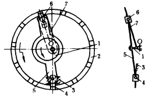

机构示意图
机构特性简介
偏心轮分度定位机构

如图所示，端部有滑槽的杆7空套在轴O上，滑销6可在7的滑槽内移动，滑销6和滑销4均 铰接于摆杆5的两端部，滑销4可在固定槽3内滑动。当主动偏心轮1转动时通过摆杆5使两滑销6、4交替拨动或锁住带有槽孔的从动盘2作单向间歇转动。主动偏心轮每转一周，通过摆杆5拨动从动盘2转过一定的角度，即相邻二槽孔的中心角，从而实现分度定位。该机构用在搓线机输送器上。